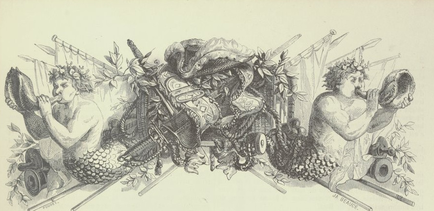
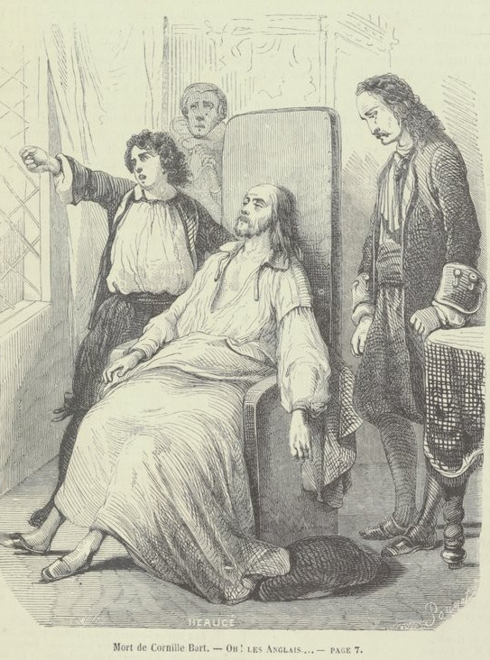

Accueil
Source bibliographique
Roman
Index
Personnes
Lieux
Galerie des Images
Galerie des Illustrations

Jean Bart et Louis XIV drames maritimes du XVIIe siècle par Eugène Sue
Emplacement: en-tête de la page 1, Chapitre 1

Mort de Cornille Bart -Ou! Les Anglais... -PAGE 7
Emplacement: milieu de la page 1, Chapitre 1